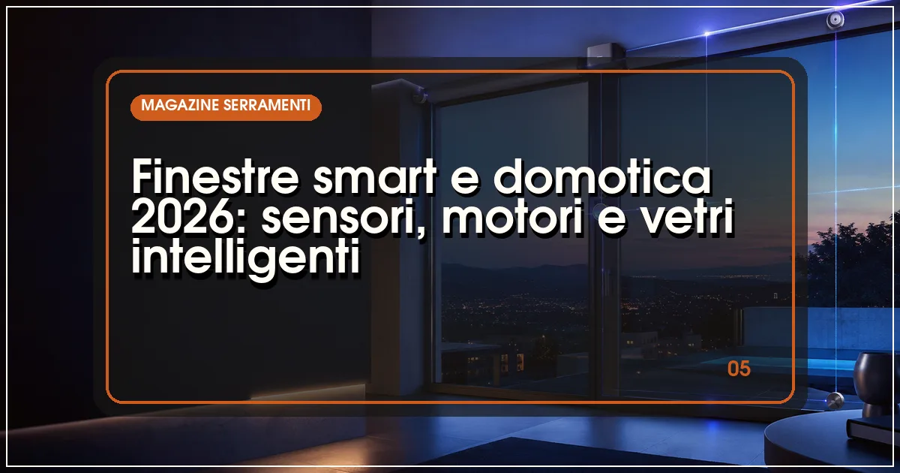

Le finestre smart del 2026 integrano nel serramento sensori di apertura, motori per ante e vasistas e, nella fascia alta, vetri elettrocromici che si oscurano elettricamente. Collegate ai sistemi domotici tramite Matter, KNX o app dedicate, gestiscono sicurezza, ventilazione automatica e comfort, con sovrapprezzi da poche decine a migliaia di euro.
In sintesi
- I sensori di apertura integrati trasformano il serramento in una sentinella di sicurezza.
- Le ante motorizzate gestiscono ventilazione naturale e chiusura automatica in caso di pioggia.
- I vetri elettrocromici modulano luce e calore senza tende: tecnologia in crescita ma costosa.
- Matter e KNX sono i due binari dell'integrazione: consumer il primo, professionale il secondo.
- Molte funzioni smart si possono aggiungere anche su finestre esistenti, con limiti.

Per decenni la finestra è stata l'elemento più "analogico" della casa: si apriva e si chiudeva a mano, e il massimo della tecnologia era il ribalta. Nel 2026 il quadro è cambiato: il serramento è diventato a tutti gli effetti un nodo della casa connessa, capace di segnalare un'effrazione, arieggiare i locali in base alla qualità dell'aria e oscurarsi automaticamente quando il sole picchia. La spinta arriva da tre direzioni convergenti: la maturità dei protocolli domotici, la miniaturizzazione dei componenti elettronici e la richiesta di edifici più efficienti sostenuta dalla direttiva Case Green.
Ma cosa conviene davvero e cosa è ancora esercizio di stile? Abbiamo passato in rassegna le tecnologie disponibili sui listini 2026, dai sensori da pochi euro ai vetri attivi di fascia altissima.
Cosa rende "smart" una finestra?
Una finestra è smart quando integra sensori, attuatori o vetri attivi collegati a un sistema di controllo. I sensori rilevano lo stato (aperta, chiusa, in ribalta, tentativo di scasso), gli attuatori agiscono (apertura e chiusura motorizzate di ante, vasistas, scorrevoli), i vetri attivi modificano le proprie proprietà ottiche su comando. Il tutto dialoga con la domotica di casa: scenari, automazioni, controllo da remoto. Il punto di svolta degli ultimi anni è che questi componenti sono sempre più integrati nel profilo, invisibili, coerenti con le tendenze di design minimali del 2026, e non più applicati a posteriori.
Sensori e sicurezza: il serramento come sentinella
La funzione smart più matura è la rilevazione di stato: contatti magnetici o sensori integrati nella ferramenta segnalano se la finestra è chiusa correttamente, aperta o in ribalta. Le applicazioni pratiche sono immediate: l'antifurto sa quali aperture sono protette prima dell'inserimento, la climatizzazione si disattiva se una finestra resta aperta, e una notifica avvisa se piove e il vasistas è spalancato. I sensori più evoluti rilevano anche vibrazioni e tentativi di scasso, completando la protezione meccanica delle finestre antieffrazione con un livello elettronico.
Motori e automazioni: ventilazione naturale gestita
La motorizzazione riguarda ante battenti, vasistas e scorrevoli: attuatori a catena o a cremagliera, spesso nascosti nel profilo, aprono e chiudono su comando o in automatico. Gli scenari più utili sono tre: la ventilazione programmata (arieggiare la notte d'estate per raffrescare gratis), la gestione della qualità dell'aria con sensori di CO₂ e umidità che aprono quando serve, e la sicurezza meteorologica, con chiusura automatica al primo segnale di pioggia o vento forte. Nei lucernari e nelle finestre per tetti, dove l'apertura manuale è scomoda, il motore è ormai quasi uno standard: ne parliamo nella guida ai lucernari e finestre per tetti.
Vetri intelligenti: elettrocromici e a oscuramento dinamico
La frontiera più affascinante è il vetro elettrocromico: una finestra che si oscura gradualmente quando attraversata da corrente, modulando luce e calore in ingresso senza tende né frangisole. I vantaggi sono notevoli — controllo solare senza parti meccaniche, vista preservata anche da oscurati, integrazione con gli scenari luminosi — ma il prezzo resta da fascia alta e i formati grandi moltiplicano i costi. Alternative più accessibili sono i vetri a oscuramento elettro ottico per la privacy (da trasparente a opaco) e, sul fronte meccanico, le tende da sole e i frangisole motorizzati integrati nella domotica, che restano la soluzione di controllo solare più diffusa.
| Tecnologia | Funzione | Integrazione | Sovrapprezzo indicativo |
|---|---|---|---|
| Sensori di apertura | Stato finestra, antifurto, gestione clima | Wireless, Matter, gateway produttore | Da poche decine di € a finestra |
| Motorizzazione anta/vasistas | Apertura automatica, ventilazione, meteo | KNX, Matter, app dedicate | Da qualche centinaio di € ad anta |
| Scorrevoli motorizzati | Grandi ante in movimento senza sforzo | Sistemi dedicati, KNX | Fascia medio-alta, variabile per formato |
| Vetri elettrocromici | Oscuramento dinamico, controllo solare | Bus di campo, scenari domotici | Fascia alta, da valutare a progetto |
| Schermature motorizzate | Tende e frangisole automatizzati | Matter, KNX, radio | Da qualche centinaio di € ad apertura |
Nota: i sovrapprezzi sono indicazioni di massima rilevate sui listini 2026 e variano sensibilmente tra produttori, formati e livello di integrazione richiesto.
Integrazione: Matter, KNX e le app dei produttori
L'interoperabilità è il nodo storico della domotica, e nel 2026 si dipana lungo due binari. Matter, lo standard nato dall'alleanza tra i grandi dell'elettronica di consumo, sta semplificando il dialogo tra dispositivi di marche diverse ed è la via più semplice per l'utenza domestica: molti produttori di serramenti offrono gateway o moduli nativi compatibili. KNX, lo standard professionale del building automation, resta il riferimento per ville, terziario e progetti integrati, dove il serramento entra nello stesso supervisore di luci, clima e sicurezza. In mezzo stanno le app dei singoli produttori, comode ma spesso ecosistemi chiusi: prima di scegliere, verificate con quali piattaforme il sistema dialoga nativamente.
Cosa conviene davvero nel 2026: la nostra sintesi
- Per quasi tutti: i sensori di apertura integrati, poco costosi e subito utili per sicurezza e gestione del clima.
- Per chi ristruttura: predisporre alimentazione e canaline per motori e bus, anche se l'installazione arriverà dopo.
- Per lucernari e finestre alte: la motorizzazione non è un lusso ma una necessità d'uso.
- Per la fascia alta: i vetri elettrocromici su esposizioni critiche, valutando bene costi e manutenzione.
- In ogni caso: scegliere sistemi aperti a Matter o KNX per non restare prigionieri di un ecosistema chiuso.
Domande frequenti sulle finestre smart
Cosa sono le finestre smart?
Le finestre smart sono serramenti dotati di sensori, attuatori o vetri attivi collegati a un sistema domotico: rilevano apertura e chiusura, si aprono e chiudono motorizzatamente, regolano la ventilazione o modificano la trasparenza del vetro, integrandosi con scenari di sicurezza, comfort ed efficienza energetica.
Quanto costa una finestra smart nel 2026?
Il sovrapprezzo per la componente smart varia molto: da poche decine di euro per un sensore di apertura integrato, a qualche centinaio per la motorizzazione di un'anta, fino a cifre consistenti per i vetri elettrocromici di grande formato, che restano una nicchia di fascia alta.
Le finestre smart si integrano con Alexa e Google Home?
Sì, nella maggior parte dei casi: i sistemi dei principali produttori dialogano con le piattaforme domestiche tramite gateway o direttamente con lo standard Matter, consentendo controllo vocale e scenari condivisi con luci, tapparelle e climatizzazione. Verificate sempre la compatibilità dichiarata del sistema scelto.
Si può rendere smart una finestra esistente?
In parte: sensori di apertura wireless e attuatori per tapparelle e tende si installano senza opere murarie. La motorizzazione vera e propria dell'anta, invece, richiede in genere ferramenta e profili predisposti, ed è quindi più semplice in fase di sostituzione del serramento.
Fonti e riferimenti ufficiali
Le informazioni di questo articolo fanno riferimento alla documentazione ufficiale degli enti competenti. Verifica sempre gli aggiornamenti sulle fonti primarie prima di prendere decisioni.